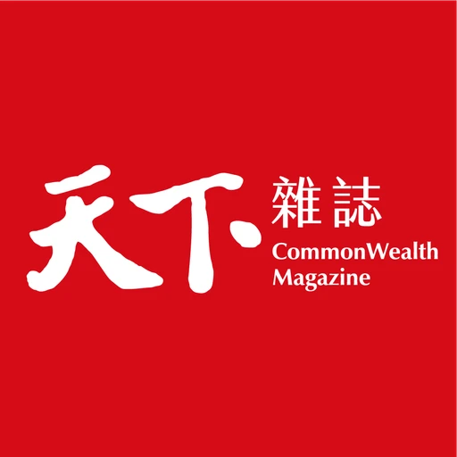

工作經歷
2023.05 – 目前
資深產品設計師
雲端力鍊股份有限公司｜全職
以推動運動科技產業數位化為目標，獨立負責 B2B SaaS 與 B2B2C 多產品線的設計策略。
- 主導 B2B SaaS 核心產品《Fitbutler》營運管理系統的設計策略，從 0 到 1 建立模組化設計架構，支援運動產業與空間租賃業等多產業應用，支援跨國營運場景
- 主導 B2B2C 會員端 App 多項核心功能設計，包含登入註冊流程優化、預約相關規則、線上儲值、補繳及綁卡驗證等功能迭代
- 主導官網改版，重整資訊架構並建立品牌視覺一致性，使用者平均參與時間提升 24.6%、回訪率提高 25.2%
- 導入 AI 設計流程，生成可互動 Prototype，加速設計到開發的交付流程，提升團隊產出效率
2019.02 – 2023.04

資深 UI/UX 設計師
天下雜誌股份有限公司｜全職
以提升用戶的訂閱數、活躍度、留存率及轉換率等關鍵指標為目標，改善天下數位產品的閱讀、廣告、訂閱等核心功能體驗，並建立天下設計系統。
- 重新設計產品訂閱流程，優化使用者決策路徑，使轉換率提高 8%
- 改善產品閱讀及廣告體驗，提高使用者滿意度，同時為廣告提高 900% 點擊率，協助公司創下「數位營收大於紙本營收」的里程碑
- 透過使用者訪談找到關鍵痛點，提高訂戶分享率與改善聽新聞體驗，首次讓 App 內的 TTS 用戶超過 Podcast 用戶
2014.08 – 2018.10
UI/UX 設計師
聯合報系股份有限公司｜全職
跨部門協作開發多元數位產品，包含媒體、知識音頻、內容創作、電商、活動票卷等，改善使用者體驗與介面設計，並向內部相關單位進行設計提案。
- 從 0 到 1 設計《一刻鯨選》知識音頻 App，為部門首次帶來營收
- 從 0 到 1 設計《讀創故事》內容閱讀 App，成為部門核心營運產品
工作夥伴怎麼說
跟大胃溝通需求時不用花太多時間解釋技術限制，她大多已經考慮進去了，交付的設計稿也很乾淨好切，人很好相處，是那種會讓整個團隊氣氛變好的人。
大胃對系統流程的理解很深，問她問題都能得到清楚的答案，不確定的地方她也不會隨便帶過，一定會去搞清楚再回來說，合作期間幾乎沒有因為規格模糊而卡住的狀況。
有幾段時間我沒辦法顧到所有事，大胃就自然地接起來了，對齊工程師、追進度、穩住大家的狀態，有她在我真的很放心。
大胃很認真聽客戶反映的問題，花時間理解背後的需求是什麼，設計出來的東西有考慮到客戶實際怎麼用還有業務怎麼賣，跟她合作不用擔心設計跟市場脫節。
歡迎與我聯絡
yuhsuanwang531@gmail.com